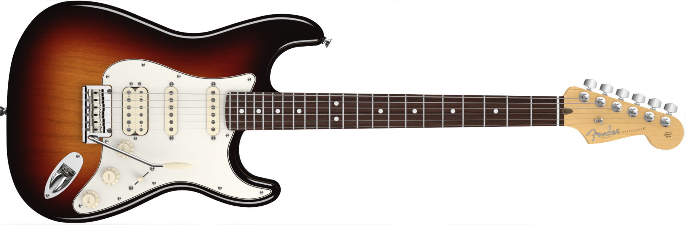

Краткое описание
Fender Stratocaster — пожалуй это именно тот инструмент, который ассоциируется у большинства гитаристов, когда они слышат что то об электрогитаре. На этот факт, есть немало причин. Во первых Fender Stratocaster самая популярная в мире гитара, которая будоражит умы не одного поколения музыкантов в течении более чем 50-ти лет. Во вторых хотите вы того или нет, но Fender Stratocaster стал прототипом для большинства гитар, которые появились и продолжают появляться с развитием музыки все больше и больше, включая как известные, так и менее известные гитарные бренды.
Подробное описание
С момента первого выпуска модели Stratocaster в 1954 году, было выпущено огромное количество различных модификаций этой гитары. Наиболее распространенный вариант это комбинация звукоснимателей HSS, т.е когда в позиции бридж ставят хамбакер вместо сингла.Такие фендеры еще называют Fender Fat Strat, поскольку хамбакер дает жирный (fat) звук.
Fender American Standard Stratocaster HSS, является наиболее ярким представителем подобных гитар. Инструмент комплектуется новыми синглами Custom Shop Fat 50′ и Fender Diamondback хамбакером в бридже, придающие более мощное и насыщенное звучание. Крышки датчиков, ручки тона и громкости специально «состаренный» и имеют желтоватый оттенок, который придает ощущение винтажного инструмента. Новый ультратонкий лак, позволяет лучше резонировать и «дышать» дереву гитары, что благоприятно сказывается на звуке. Корпус гитары изготовлен из ольхи, за исключением цвета Sienna Sunburst, где корпус сделан из ясеня. Гриф гитары традиционно кленовый, крепится на 4-х болтах и может комплектоваться как палисандровой так и кленовой накладкой.
Характеристики
- Серия: American Standard Series
- Корпус: Ольха/Ясень (Ольха- все цвета, Ясень — Sienna Sunburst)
- Гриф: Клен ( профиль С, Satin Urethane Finish)
- Накладка: Палисандр или клен, радиус 9,5-14 (241mm-355.6mm)
- Лады: 22 Medium Jumbo Frets
- Звукосниматели: Custom Shop Fat 50′ и Fender Diamondback хамбакер в позиции бридж.
- Ручки регулировки: громкость
- Бридж: 2-Point Synchronized Tremolo with New American Standard Bent Steel Saddles
- Колки: Fender® Deluxe Staggered Cast/Sealed
- Фурнитура: xром
- Мензура: 25.5 (648 mm)
- Ширина верхнего порожка: 1.685″ (42.8 mm)
- Производство: США
Особенности
- 4-х болтовое крепление грифа, Bi-Flex Truss Rod System
- В комплекте с гитарой: SKB кейс, кабель, ремень и палироль Fender.